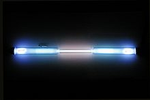

Krypton
| 
A krypton-filled discharge tube glowing white
|
|||||||||||||||||||||||||||||||||||||||||||||||||||||||||||||||||||||||||||||||||||||||||||||||||||||||||||||||||||||||||||||||||||||||||||||||||||||||||||||||||||||||||||||||||||||||||||||||||||||||||||||||||||||||||||||||||||||
|
Spectral lines of krypton
|
|||||||||||||||||||||||||||||||||||||||||||||||||||||||||||||||||||||||||||||||||||||||||||||||||||||||||||||||||||||||||||||||||||||||||||||||||||||||||||||||||||||||||||||||||||||||||||||||||||||||||||||||||||||||||||||||||||||
| General properties | |||||||||||||||||||||||||||||||||||||||||||||||||||||||||||||||||||||||||||||||||||||||||||||||||||||||||||||||||||||||||||||||||||||||||||||||||||||||||||||||||||||||||||||||||||||||||||||||||||||||||||||||||||||||||||||||||||||
|---|---|---|---|---|---|---|---|---|---|---|---|---|---|---|---|---|---|---|---|---|---|---|---|---|---|---|---|---|---|---|---|---|---|---|---|---|---|---|---|---|---|---|---|---|---|---|---|---|---|---|---|---|---|---|---|---|---|---|---|---|---|---|---|---|---|---|---|---|---|---|---|---|---|---|---|---|---|---|---|---|---|---|---|---|---|---|---|---|---|---|---|---|---|---|---|---|---|---|---|---|---|---|---|---|---|---|---|---|---|---|---|---|---|---|---|---|---|---|---|---|---|---|---|---|---|---|---|---|---|---|---|---|---|---|---|---|---|---|---|---|---|---|---|---|---|---|---|---|---|---|---|---|---|---|---|---|---|---|---|---|---|---|---|---|---|---|---|---|---|---|---|---|---|---|---|---|---|---|---|---|---|---|---|---|---|---|---|---|---|---|---|---|---|---|---|---|---|---|---|---|---|---|---|---|---|---|---|---|---|---|---|---|---|---|---|---|---|---|---|---|---|---|---|---|---|---|---|---|---|
| Name, symbol | krypton, Kr | ||||||||||||||||||||||||||||||||||||||||||||||||||||||||||||||||||||||||||||||||||||||||||||||||||||||||||||||||||||||||||||||||||||||||||||||||||||||||||||||||||||||||||||||||||||||||||||||||||||||||||||||||||||||||||||||||||||
| Pronunciation | /ˈkrɪptɒn/ KRIP-ton |
||||||||||||||||||||||||||||||||||||||||||||||||||||||||||||||||||||||||||||||||||||||||||||||||||||||||||||||||||||||||||||||||||||||||||||||||||||||||||||||||||||||||||||||||||||||||||||||||||||||||||||||||||||||||||||||||||||
| Appearance | colorless gas, exhibiting a whitish glow in a high electric field | ||||||||||||||||||||||||||||||||||||||||||||||||||||||||||||||||||||||||||||||||||||||||||||||||||||||||||||||||||||||||||||||||||||||||||||||||||||||||||||||||||||||||||||||||||||||||||||||||||||||||||||||||||||||||||||||||||||
| Krypton in the periodic table | |||||||||||||||||||||||||||||||||||||||||||||||||||||||||||||||||||||||||||||||||||||||||||||||||||||||||||||||||||||||||||||||||||||||||||||||||||||||||||||||||||||||||||||||||||||||||||||||||||||||||||||||||||||||||||||||||||||
|
|||||||||||||||||||||||||||||||||||||||||||||||||||||||||||||||||||||||||||||||||||||||||||||||||||||||||||||||||||||||||||||||||||||||||||||||||||||||||||||||||||||||||||||||||||||||||||||||||||||||||||||||||||||||||||||||||||||
| Atomic number | 36 | ||||||||||||||||||||||||||||||||||||||||||||||||||||||||||||||||||||||||||||||||||||||||||||||||||||||||||||||||||||||||||||||||||||||||||||||||||||||||||||||||||||||||||||||||||||||||||||||||||||||||||||||||||||||||||||||||||||
| Standard atomic weight (±) | 83.798(2)[1] | ||||||||||||||||||||||||||||||||||||||||||||||||||||||||||||||||||||||||||||||||||||||||||||||||||||||||||||||||||||||||||||||||||||||||||||||||||||||||||||||||||||||||||||||||||||||||||||||||||||||||||||||||||||||||||||||||||||
| Element category | noble gas | ||||||||||||||||||||||||||||||||||||||||||||||||||||||||||||||||||||||||||||||||||||||||||||||||||||||||||||||||||||||||||||||||||||||||||||||||||||||||||||||||||||||||||||||||||||||||||||||||||||||||||||||||||||||||||||||||||||
| Group, block | group 18 (noble gases), p-block | ||||||||||||||||||||||||||||||||||||||||||||||||||||||||||||||||||||||||||||||||||||||||||||||||||||||||||||||||||||||||||||||||||||||||||||||||||||||||||||||||||||||||||||||||||||||||||||||||||||||||||||||||||||||||||||||||||||
| Period | period 4 | ||||||||||||||||||||||||||||||||||||||||||||||||||||||||||||||||||||||||||||||||||||||||||||||||||||||||||||||||||||||||||||||||||||||||||||||||||||||||||||||||||||||||||||||||||||||||||||||||||||||||||||||||||||||||||||||||||||
| Electron configuration | [Ar] 3d10 4s2 4p6 | ||||||||||||||||||||||||||||||||||||||||||||||||||||||||||||||||||||||||||||||||||||||||||||||||||||||||||||||||||||||||||||||||||||||||||||||||||||||||||||||||||||||||||||||||||||||||||||||||||||||||||||||||||||||||||||||||||||
| per shell | 2, 8, 18, 8 | ||||||||||||||||||||||||||||||||||||||||||||||||||||||||||||||||||||||||||||||||||||||||||||||||||||||||||||||||||||||||||||||||||||||||||||||||||||||||||||||||||||||||||||||||||||||||||||||||||||||||||||||||||||||||||||||||||||
| Physical properties | |||||||||||||||||||||||||||||||||||||||||||||||||||||||||||||||||||||||||||||||||||||||||||||||||||||||||||||||||||||||||||||||||||||||||||||||||||||||||||||||||||||||||||||||||||||||||||||||||||||||||||||||||||||||||||||||||||||
| Phase | gas | ||||||||||||||||||||||||||||||||||||||||||||||||||||||||||||||||||||||||||||||||||||||||||||||||||||||||||||||||||||||||||||||||||||||||||||||||||||||||||||||||||||||||||||||||||||||||||||||||||||||||||||||||||||||||||||||||||||
| Melting point | 115.78 K (−157.37 °C, −251.27 °F) | ||||||||||||||||||||||||||||||||||||||||||||||||||||||||||||||||||||||||||||||||||||||||||||||||||||||||||||||||||||||||||||||||||||||||||||||||||||||||||||||||||||||||||||||||||||||||||||||||||||||||||||||||||||||||||||||||||||
| Boiling point | 119.93 K (−153.415 °C, −244.147 °F) | ||||||||||||||||||||||||||||||||||||||||||||||||||||||||||||||||||||||||||||||||||||||||||||||||||||||||||||||||||||||||||||||||||||||||||||||||||||||||||||||||||||||||||||||||||||||||||||||||||||||||||||||||||||||||||||||||||||
| Density at stp (0 °C and 101.325 kPa) | 3.749 g·L−1 | ||||||||||||||||||||||||||||||||||||||||||||||||||||||||||||||||||||||||||||||||||||||||||||||||||||||||||||||||||||||||||||||||||||||||||||||||||||||||||||||||||||||||||||||||||||||||||||||||||||||||||||||||||||||||||||||||||||
| when liquid, at b.p. | 2.413 g·cm−3[2] | ||||||||||||||||||||||||||||||||||||||||||||||||||||||||||||||||||||||||||||||||||||||||||||||||||||||||||||||||||||||||||||||||||||||||||||||||||||||||||||||||||||||||||||||||||||||||||||||||||||||||||||||||||||||||||||||||||||
| Triple point | 115.775 K, 73.53 kPa[3][4] | ||||||||||||||||||||||||||||||||||||||||||||||||||||||||||||||||||||||||||||||||||||||||||||||||||||||||||||||||||||||||||||||||||||||||||||||||||||||||||||||||||||||||||||||||||||||||||||||||||||||||||||||||||||||||||||||||||||
| Critical point | 209.48 K, 5.525 MPa[4] | ||||||||||||||||||||||||||||||||||||||||||||||||||||||||||||||||||||||||||||||||||||||||||||||||||||||||||||||||||||||||||||||||||||||||||||||||||||||||||||||||||||||||||||||||||||||||||||||||||||||||||||||||||||||||||||||||||||
| Heat of fusion | 1.64 kJ·mol−1 | ||||||||||||||||||||||||||||||||||||||||||||||||||||||||||||||||||||||||||||||||||||||||||||||||||||||||||||||||||||||||||||||||||||||||||||||||||||||||||||||||||||||||||||||||||||||||||||||||||||||||||||||||||||||||||||||||||||
| Heat of vaporization | 9.08 kJ·mol−1 | ||||||||||||||||||||||||||||||||||||||||||||||||||||||||||||||||||||||||||||||||||||||||||||||||||||||||||||||||||||||||||||||||||||||||||||||||||||||||||||||||||||||||||||||||||||||||||||||||||||||||||||||||||||||||||||||||||||
| Molar heat capacity | 20.95[5] J·mol−1·K−1 | ||||||||||||||||||||||||||||||||||||||||||||||||||||||||||||||||||||||||||||||||||||||||||||||||||||||||||||||||||||||||||||||||||||||||||||||||||||||||||||||||||||||||||||||||||||||||||||||||||||||||||||||||||||||||||||||||||||
vapor pressure
|
|||||||||||||||||||||||||||||||||||||||||||||||||||||||||||||||||||||||||||||||||||||||||||||||||||||||||||||||||||||||||||||||||||||||||||||||||||||||||||||||||||||||||||||||||||||||||||||||||||||||||||||||||||||||||||||||||||||
| Atomic properties | |||||||||||||||||||||||||||||||||||||||||||||||||||||||||||||||||||||||||||||||||||||||||||||||||||||||||||||||||||||||||||||||||||||||||||||||||||||||||||||||||||||||||||||||||||||||||||||||||||||||||||||||||||||||||||||||||||||
| Oxidation states | 2, 1, 0 (rarely more than 0; unknown oxide) | ||||||||||||||||||||||||||||||||||||||||||||||||||||||||||||||||||||||||||||||||||||||||||||||||||||||||||||||||||||||||||||||||||||||||||||||||||||||||||||||||||||||||||||||||||||||||||||||||||||||||||||||||||||||||||||||||||||
| Electronegativity | Pauling scale: 3.00 | ||||||||||||||||||||||||||||||||||||||||||||||||||||||||||||||||||||||||||||||||||||||||||||||||||||||||||||||||||||||||||||||||||||||||||||||||||||||||||||||||||||||||||||||||||||||||||||||||||||||||||||||||||||||||||||||||||||
| Ionization energies | 1st: 1350.8 kJ·mol−1 2nd: 2350.4 kJ·mol−1 3rd: 3565 kJ·mol−1 |
||||||||||||||||||||||||||||||||||||||||||||||||||||||||||||||||||||||||||||||||||||||||||||||||||||||||||||||||||||||||||||||||||||||||||||||||||||||||||||||||||||||||||||||||||||||||||||||||||||||||||||||||||||||||||||||||||||
| Covalent radius | 116±4 pm | ||||||||||||||||||||||||||||||||||||||||||||||||||||||||||||||||||||||||||||||||||||||||||||||||||||||||||||||||||||||||||||||||||||||||||||||||||||||||||||||||||||||||||||||||||||||||||||||||||||||||||||||||||||||||||||||||||||
| Van der Waals radius | 202 pm | ||||||||||||||||||||||||||||||||||||||||||||||||||||||||||||||||||||||||||||||||||||||||||||||||||||||||||||||||||||||||||||||||||||||||||||||||||||||||||||||||||||||||||||||||||||||||||||||||||||||||||||||||||||||||||||||||||||
| Miscellanea | |||||||||||||||||||||||||||||||||||||||||||||||||||||||||||||||||||||||||||||||||||||||||||||||||||||||||||||||||||||||||||||||||||||||||||||||||||||||||||||||||||||||||||||||||||||||||||||||||||||||||||||||||||||||||||||||||||||
| Crystal structure | face-centered cubic (fcc)
 |
||||||||||||||||||||||||||||||||||||||||||||||||||||||||||||||||||||||||||||||||||||||||||||||||||||||||||||||||||||||||||||||||||||||||||||||||||||||||||||||||||||||||||||||||||||||||||||||||||||||||||||||||||||||||||||||||||||
| Speed of sound | (gas, 23 °C) 220 m·s−1 (liquid) 1120 m·s−1 |
||||||||||||||||||||||||||||||||||||||||||||||||||||||||||||||||||||||||||||||||||||||||||||||||||||||||||||||||||||||||||||||||||||||||||||||||||||||||||||||||||||||||||||||||||||||||||||||||||||||||||||||||||||||||||||||||||||
| Thermal conductivity | 9.43×10−3 W·m−1·K−1 | ||||||||||||||||||||||||||||||||||||||||||||||||||||||||||||||||||||||||||||||||||||||||||||||||||||||||||||||||||||||||||||||||||||||||||||||||||||||||||||||||||||||||||||||||||||||||||||||||||||||||||||||||||||||||||||||||||||
| Magnetic ordering | diamagnetic[6] | ||||||||||||||||||||||||||||||||||||||||||||||||||||||||||||||||||||||||||||||||||||||||||||||||||||||||||||||||||||||||||||||||||||||||||||||||||||||||||||||||||||||||||||||||||||||||||||||||||||||||||||||||||||||||||||||||||||
| CAS Registry Number | 7439-90-9 | ||||||||||||||||||||||||||||||||||||||||||||||||||||||||||||||||||||||||||||||||||||||||||||||||||||||||||||||||||||||||||||||||||||||||||||||||||||||||||||||||||||||||||||||||||||||||||||||||||||||||||||||||||||||||||||||||||||
| History | |||||||||||||||||||||||||||||||||||||||||||||||||||||||||||||||||||||||||||||||||||||||||||||||||||||||||||||||||||||||||||||||||||||||||||||||||||||||||||||||||||||||||||||||||||||||||||||||||||||||||||||||||||||||||||||||||||||
| Discovery and first isolation | William Ramsay and Morris Travers (1898) | ||||||||||||||||||||||||||||||||||||||||||||||||||||||||||||||||||||||||||||||||||||||||||||||||||||||||||||||||||||||||||||||||||||||||||||||||||||||||||||||||||||||||||||||||||||||||||||||||||||||||||||||||||||||||||||||||||||
| Most stable isotopes | |||||||||||||||||||||||||||||||||||||||||||||||||||||||||||||||||||||||||||||||||||||||||||||||||||||||||||||||||||||||||||||||||||||||||||||||||||||||||||||||||||||||||||||||||||||||||||||||||||||||||||||||||||||||||||||||||||||
|
|||||||||||||||||||||||||||||||||||||||||||||||||||||||||||||||||||||||||||||||||||||||||||||||||||||||||||||||||||||||||||||||||||||||||||||||||||||||||||||||||||||||||||||||||||||||||||||||||||||||||||||||||||||||||||||||||||||
| Decay modes in parentheses are predicted, but have not yet been observed | |||||||||||||||||||||||||||||||||||||||||||||||||||||||||||||||||||||||||||||||||||||||||||||||||||||||||||||||||||||||||||||||||||||||||||||||||||||||||||||||||||||||||||||||||||||||||||||||||||||||||||||||||||||||||||||||||||||
{kind=link}
{kind=link}
Krypton (from Greek: κρυπτός kryptos "the hidden one") is a chemical element with symbol Kr and atomic number 36. It is a member of group 18 (noble gases) elements. A colorless, odorless, tasteless noble gas, krypton occurs in trace amounts in the atmosphere, is isolated by fractionally distilling liquefied air, and is often used with other rare gases in fluorescent lamps. Krypton is inert for most practical purposes.
Krypton, like the other noble gases, can be used in lighting and photography. Krypton light has a large number of spectral lines, and krypton's high light output in plasmas allows it to play an important role in many high-powered gas lasers (krypton ion and excimer lasers), which pick out one of the many spectral lines to amplify. There is also a specific krypton fluoride laser. The high power and relative ease of operation of krypton discharge tubes caused (from 1960 to 1983) the official length of a meter to be defined in terms of the wavelength of the 605 nm (orange) spectral line of krypton-86.
Contents
[hide]History
{kind=link}
Krypton was discovered in Britain in 1898 by Sir William Ramsay, a Scottish chemist, and Morris Travers, an English chemist, in residue left from evaporating nearly all components of liquid air. Neon was discovered by a similar procedure by the same workers just a few weeks later.[7] William Ramsay was awarded the 1904 Nobel Prize in Chemistry for discovery of a series of noble gases, including krypton.
In 1960, the International Conference on Weights and Measures defined the meter as 1,650,763.73 wavelengths of light emitted by the krypton-86 isotope.[8][9] This agreement replaced the 1889 international prototype meter located in Paris, which was a metal bar made of a platinum-iridium alloy (one of a series of standard meter bars, originally constructed to be one ten-millionth of a quadrant of the Earth's polar circumference). This also obsoleted the 1927 definition of the ångström based on the red cadmium spectral line,[10] replacing it with 1 Å = 10−10 m. The krypton-86 definition lasted until the October 1983 conference, which redefined the meter as the distance that light travels in a vacuum during 1/299,792,458 s.[11][12][13]
Characteristics
Krypton is characterized by several sharp emission lines (spectral signatures) the strongest being green and yellow.[14] It is one of the products of uranium fission.[15] Solidified krypton is white and crystalline with a face-centered cubic crystal structure, which is a common property of all noble gases (except helium, with a hexagonal close-packed crystal structure).
Isotopes
Naturally occurring krypton is made of six stable isotopes. In addition, about thirty unstable isotopes and isomers are known.[16] 81Kr, the product of atmospheric reactions, is produced with the other naturally occurring isotopes of krypton. Being radioactive, it has a half-life of 230,000 years. Krypton is highly volatile when it is near surface waters but 81Kr has been used for dating old (50,000–800,000 years) groundwater.[17]
85Kr is an inert radioactive noble gas with a half-life of 10.76 years. It is produced by the fission of uranium and plutonium, such as in nuclear bomb testing and nuclear reactors. 85Kr is released during the reprocessing of fuel rods from nuclear reactors. Concentrations at the North Pole are 30% higher than at the South Pole due to convective mixing.[18]
Chemistry
Like the other noble gases, krypton is highly chemically unreactive. However, following the first successful synthesis of xenon compounds in 1962, synthesis of krypton difluoride (KrF
2) was reported in 1963. In fact, before the 1960s, no noble gas compounds had been discovered.[19] Under extreme conditions, krypton reacts with fluorine to form KrF2 according to the following equation:
-
- Kr + F2 → KrF2
In the same year, KrF
4 was reported by Grosse, et al.,[20] but was subsequently shown to be a mistaken identification.[21] There are also unverified reports of a barium salt of a krypton oxoacid.[22] ArKr+ and KrH+ polyatomic ions have been investigated and there is evidence for KrXe or KrXe+.[23]
Compounds with krypton bonded to atoms other than fluorine have also been discovered. The reaction of KrF
2 with B(OTeF
5)
3 produces an unstable compound, Kr(OTeF
5)
2, that contains a krypton-oxygen bond. A krypton-nitrogen bond is found in the cation [HC≡N–Kr–F]+
, produced by the reaction of KrF
2 with [HC≡NH]+
[AsF−
6] below −50 °C.[24][25] HKrCN and HKrC≡CH (krypton hydride-cyanide and hydrokryptoacetylene) were reported to be stable up to 40 K.[19]
Natural occurrence
The Earth has retained all of the noble gases that were present at its formation except for helium. Krypton's concentration in the atmosphere is about 1 ppm. It can be extracted from liquid air by fractional distillation.[26] The amount of krypton in space is uncertain, as the amount is derived from the meteoric activity and that from solar winds. The first measurements suggest an overabundance of krypton in space.[27]
Applications
{kind=link}
Krypton's multiple emission lines make ionized krypton gas discharges appear whitish, which in turn makes krypton-based bulbs useful in photography as a brilliant white light source. Krypton is thus used in some types of photographic flashes used in high speed photography. Krypton gas is also combined with other gases to make luminous signs that glow with a bright greenish-yellow light.[28]
Krypton mixes with argon as the fill gas of energy saving fluorescent lamps. This reduces their power consumption. Unfortunately this also reduces their light output and raises their cost.[29] Krypton costs about 100 times as much as argon. Krypton (along with xenon) is also used to fill incandescent lamps to reduce filament evaporation and allow higher operating temperatures to be used for the filament.[30] A brighter light results which contains more blue than conventional lamps.
Krypton's white discharge is often used to good effect in colored gas discharge tubes, which are then simply painted or stained in other ways to allow the desired color (for example, "neon" type advertising signs where the letters appear in differing colors are often entirely krypton-based). Krypton is also capable of much higher light power density than neon in the red spectral line region, and for this reason, red lasers for high-power laser light-shows are often krypton lasers with mirrors which select out the red spectral line for laser amplification and emission, rather than the more familiar helium-neon variety, which could never practically achieve the multi-watt red laser light outputs needed for this application.[31]
Krypton has an important role in production and usage of the krypton fluoride laser. The laser has been important in the nuclear fusion energy research community in confinement experiments. The laser has high beam uniformity, short wavelength, and the ability to modify the spot size to track an imploding pellet.[32]
In experimental particle physics, liquid krypton is used to construct quasi-homogeneous electromagnetic calorimeters. A notable example is the calorimeter of the NA48 experiment at CERN containing about 27 tonnes of liquid krypton. This usage is rare, since the cheaper liquid argon is typically used. The advantage of krypton over argon is a small Molière radius of 4.7 cm, which allows for excellent spatial resolution and low degree of overlapping. The other parameters relevant for calorimetry application are: radiation length of X0=4.7 cm, density of 2.4 g/cm3.
The sealed spark gap assemblies contained in ignition exciters used in some older jet engines contain a very small amount of Krypton-85 to obtain consistent ionization levels and uniform operation.
Krypton-83 has application in magnetic resonance imaging (MRI) for imaging airways. In particular, it may be used to distinguish between hydrophobic and hydrophilic surfaces containing an airway.[33]
Although xenon has potential for use in computed tomography (CT) to assess regional ventilation, its anesthetic properties limit its fraction in the breathing gas to 35%. The use of a breathing mixture containing 30% xenon and 30% krypton is comparable in effectiveness for CT to a 40% xenon fraction, while avoiding the unwanted effects of a high fraction xenon gas.[34]
Methods for the detection of concentrations of Krypton-85 in the atmosphere have been used to detect suspected clandestine nuclear fuel reprocessing facilities in North Korea[35] and Pakistan.[36] These facilities were detected in the early 2000s and were believed to be producing weapons-grade plutonium.
Precautions
Krypton is considered to be a non-toxic asphyxiant.[37] Krypton has a narcotic potency seven times greater than air, so breathing a gas containing 50% krypton and 50% air would cause narcosis similar to breathing air at four times atmospheric pressure. This would be comparable to scuba diving at a depth of 30 m (100 ft) (see nitrogen narcosis) and potentially could affect anyone breathing it. Nevertheless, that mixture would contain only 10% oxygen and hypoxia would be a greater concern.
See also
References
- Jump up ^ Standard Atomic Weights 2013. Commission on Isotopic Abundances and Atomic Weights
- Jump up ^ Krypton. encyclopedia.airliquide.com
- Jump up ^ "Section 4, Properties of the Elements and Inorganic Compounds; Melting, boiling, triple, and critical temperatures of the elements". CRC Handbook of Chemistry and Physics (85th edition ed.). Boca Raton, Florida: CRC Press. 2005.
- ^ Jump up to: a b Haynes, William M., ed. (2011). CRC Handbook of Chemistry and Physics (92nd ed.). Boca Raton, FL: CRC Press. p. 4.121. ISBN 1439855110.
- Jump up ^ Shuen-Chen Hwang, Robert D. Lein, Daniel A. Morgan (2005). "Noble Gases". Kirk Othmer Encyclopedia of Chemical Technology. Wiley. pp. 343–383. doi:10.1002/0471238961.0701190508230114.a01.
- Jump up ^ Magnetic susceptibility of the elements and inorganic compounds, in Lide, D. R., ed. (2005). CRC Handbook of Chemistry and Physics (86th ed.). Boca Raton (FL): CRC Press. ISBN 0-8493-0486-5.
- Jump up ^ William Ramsay; Morris W. Travers (1898). "On a New Constituent of Atmospheric Air". Proceedings of the Royal Society of London 63 (1): 405–408. doi:10.1098/rspl.1898.0051.
- Jump up ^ "The BIPM and the evolution of the definition of the metre". Bureau International des Poids et Mesures. 2014-07-26. Retrieved 2014-09-24.
- Jump up ^ Penzes, William B. (2009-01-08). "Time Line for the Definition of the Meter". National Institute of Stadnards and Technology. Retrieved 2014-09-24.
- Jump up ^ Burdun, G. D. (1958). "On the new determination of the meter" (PDF). Measurement Techniques 1 (3): 259–264. doi:10.1007/BF00974680. (subscription required (help)).
- Jump up ^ Shri Krishna Kimothi (2002). The uncertainty of measurements: physical and chemical metrology: impact and analysis. American Society for Quality. p. 122. ISBN 0-87389-535-5.
- Jump up ^ Gibbs, Philip (1997). "How is the speed of light measured?". Department of Mathematics, University of California. Retrieved 2007-03-19.
- Jump up ^ Unit of length (meter), NIST
- Jump up ^ "Spectra of Gas Discharges".
- Jump up ^ "Krypton". Argonne National Laboratory, EVS. 2005. Archived from the original (PDF) on 2009-12-20. Retrieved 2007-03-17.
- Jump up ^ Lide, D. R., ed. (2005). CRC Handbook of Chemistry and Physics (86th ed.). Boca Raton (FL): CRC Press. ISBN 0-8493-0486-5.
- Jump up ^ Thonnard, Norbert; Larry D. MeKay; Theodore C. Labotka (2001-02-05). "Development of Laser-Based Resonance Ionization Techniques for 81-Kr and 85-Kr Measurements in the Geosciences" (PDF). University of Tennessee, Institute for Rare Isotope Measurements. pp. 4–7. Retrieved 2007-03-20.
- Jump up ^ "Resources on Isotopes". U.S. Geological Survey. Retrieved 2007-03-20.
- ^ Jump up to: a b Bartlett, Neil (2003). "The Noble Gases". Chemical & Engineering News. Retrieved 2006-07-02.
- Jump up ^ Grosse, A. V.; Kirshenbaum, A. D.; Streng, A. G.; Streng, L. V. (1963). "Krypton Tetrafluoride: Preparation and Some Properties". Science 139 (3559): 1047–1048. Bibcode:1963Sci...139.1047G. doi:10.1126/science.139.3559.1047. PMID 17812982.
- Jump up ^ Prusakov, V. N.; Sokolov, V. B. (1971). "Krypton difluoride". Soviet Atomic Energy 31 (3): 990–999. doi:10.1007/BF01375764.
- Jump up ^ Streng, A.; Grosse, A. (1964). "Acid of Krypton and Its Barium Salt". Science 143 (3603): 242–243. Bibcode:1964Sci...143..242S. doi:10.1126/science.143.3603.242. PMID 17753149.
- Jump up ^ "Periodic Table of the Elements" (PDF). Los Alamos National Laboratory's Chemistry Division. pp. 100–101. Archived from the original (PDF) on November 25, 2006. Retrieved 2007-04-05.
- Jump up ^ John H. Holloway; Eric G. Hope (1998). A. G. Sykes, ed. Advances in Inorganic Chemistry. Academic Press. p. 57. ISBN 0-12-023646-X.
- Jump up ^ Errol G. Lewars (2008). Modeling Marvels: Computational Anticipation of Novel Molecules. Springer. p. 68. ISBN 1-4020-6972-3.
- Jump up ^ "How Products are Made: Krypton". Retrieved 2006-07-02.
- Jump up ^ Cardelli, Jason A.; Meyer, David M. (1996). "The Abundance of Interstellar Krypton". The Astrophysical Journal Letters. The American Astronomical Society. pp. L57–L60. Retrieved 2007-04-05.
- Jump up ^ "Mercury in Lighting" (PDF). Cape Cod Cooperative Extension. Archived from the original (PDF) on September 29, 2007. Retrieved 2007-03-20.
- Jump up ^ "Energy-saving" lamps
- Jump up ^ Properties, Applications and Uses of the "Rare Gases" Neon, Krypton and Xenon
- Jump up ^ "Laser Devices, Laser Shows and Effect" (PDF). Retrieved 2007-04-05.
- Jump up ^ Sethian, J.; M. Friedman; M. Myers. "Krypton Fluoride Laser Development for Inertial Fusion Energy" (PDF). Plasma Physics Division, Naval Research Laboratory. pp. 1–8. Retrieved 2007-03-20.
- Jump up ^ Pavlovskaya, GE; Cleveland, ZI; Stupic, KF; Basaraba, RJ et al. (2005). "Hyperpolarized krypton-83 as a contrast agent for magnetic resonance imaging". Proceedings of the National Academy of Sciences U.S.A. 102 (51): 18275–9. Bibcode:2005PNAS..10218275P. doi:10.1073/pnas.0509419102. PMC 1317982. PMID 16344474.
- Jump up ^ Chon, D; Beck, KC; Simon, BA; Shikata, H et al. (2007). "Effect of low-xenon and krypton supplementation on signal/noise of regional CT-based ventilation measurements". Journal of Applied Physiology 102 (4): 1535–44. doi:10.1152/japplphysiol.01235.2005. PMID 17122371.
- Jump up ^ Sanger, David E.; Shanker, Thom (2003-07-20). "N. Korea may be hiding new nuclear site". Oakland Tribune. Retrieved 2015-05-01 – via Highbeam Research.
- Jump up ^ Bradley, Ed; Martin, David (2000-03-16). "U.S. Intelligence Find Evidence of Pakistan Producing Nuclear Weapons, CBS". CBS Evening News with Dan Rather. Retrieved 2015-05-01 – via Highbeam Research.
- Jump up ^ Properties of Krypton
Further reading
- William P. Kirk "Krypton 85: a Review of the Literature and an Analysis of Radiation Hazards", Environmental Protection Agency, Office of Research and Monitoring, Washington (1972)
External links
- Krypton at The Periodic Table of Videos (University of Nottingham)
- Krypton Fluoride Lasers, Plasma Physics Division Naval Research Laboratory
| [hide] Periodic table (Large cells) | |||||||||||||||||||||||||||||||||
|---|---|---|---|---|---|---|---|---|---|---|---|---|---|---|---|---|---|---|---|---|---|---|---|---|---|---|---|---|---|---|---|---|---|
| 1 | 2 | 3 | 4 | 5 | 6 | 7 | 8 | 9 | 10 | 11 | 12 | 13 | 14 | 15 | 16 | 17 | 18 | ||||||||||||||||
| 1 | H | He | |||||||||||||||||||||||||||||||
| 2 | Li | Be | B | C | N | O | F | Ne | |||||||||||||||||||||||||
| 3 | Na | Mg | Al | Si | P | S | Cl | Ar | |||||||||||||||||||||||||
| 4 | K | Ca | Sc | Ti | V | Cr | Mn | Fe | Co | Ni | Cu | Zn | Ga | Ge | As | Se | Br | Kr | |||||||||||||||
| 5 | Rb | Sr | Y | Zr | Nb | Mo | Tc | Ru | Rh | Pd | Ag | Cd | In | Sn | Sb | Te | I | Xe | |||||||||||||||
| 6 | Cs | Ba | La | Ce | Pr | Nd | Pm | Sm | Eu | Gd | Tb | Dy | Ho | Er | Tm | Yb | Lu | Hf | Ta | W | Re | Os | Ir | Pt | Au | Hg | Tl | Pb | Bi | Po | At | Rn | |
| 7 | Fr | Ra | Ac | Th | Pa | U | Np | Pu | Am | Cm | Bk | Cf | Es | Fm | Md | No | Lr | Rf | Db | Sg | Bh | Hs | Mt | Ds | Rg | Cn | 113 | Fl | 115 | Lv | 117 | 118 | |
|
|
|||||||||||||||||||||||||||||||||